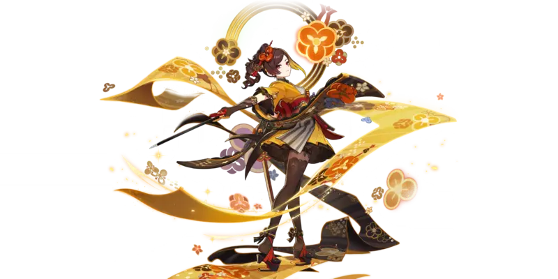

I just want to spend time with them
Written , a 3 minute read.
Chiori story quest
I hate Hoyo for the tease of seeing Lumine in new outfit, just to get occupied with the story and forget the promise from Chiori. I was really excited about the fashion show part, hoping that we get some of the Winx Club vibe inside the Genshin. But no, we have to have more standard tale of competition and broken friendship. In the end I liked the story, but I would really like a smaller one where we just spend some time with Chiori and get to be friends. Perhaps the format of story quest ruined it, and Chiori should have hangout.
Skipping the fashion aspect that I loved, what else was fun? Small doungeon crawling with Chiori, with mix of some platforms and fights. Cameos from Navia and Kirara are also very good, especially Navia providing protection for Kirara.
Chiori as character
I got lucky and get her C1 with pretty bad pity (didn't aim for C1, just luck). However, didn't have time to finish building her yet, hope to do it in 4.6.
I am amazed with how she looks, a true fashion icon, one of my favorite outfit designs in Genshin. Going with tradition of Fontaine, she also feels more developed as a person then previous Genshin women. However, I feel like they backed up on her personality from the movie festival. I blame yet again on the form of story quest that feels the need to be grand and steals from us just hanging out with our friends.
Lynette hangout
This is my fourth fully completed hangout, but second fully completed on premiere (first was Kuki Shinobu one). It was really good, introducing some RPG mechanics that determined the outcome of the story - rolling dice in form of pulling numbered cards, having perception and persuasion checks.
The story was good, but the main star was Lynette, I love her personality and mannerisms. One of the best dates that we had in the game, certainly on the podium with Beidou, Noelle and Kuki. I can't wait for the part two, Lynette become my third favorite character from Fontaine (as a person, not as playable unit).
Also we have small cameo from Furina! I love that she gets involved in all of the story thought Fontaine
4.5 in nutshell
There is a widespread opinion that 4.5 is a filler patch. For the first part I really didn't feel like this, especially with my hype for Chiori, great hangout with Lynnete and really nice alchemy event. However the second part is dreadful in new content, I hated doing new events, feeling forced by the release of Arlecchino in the next patch. So mixed feelings, but still - it is nice to sometimes take things slow, especially when you don't have much time for Genshin. With slower updates I can finish some older quests, explore a bit and build characters waiting in queue.